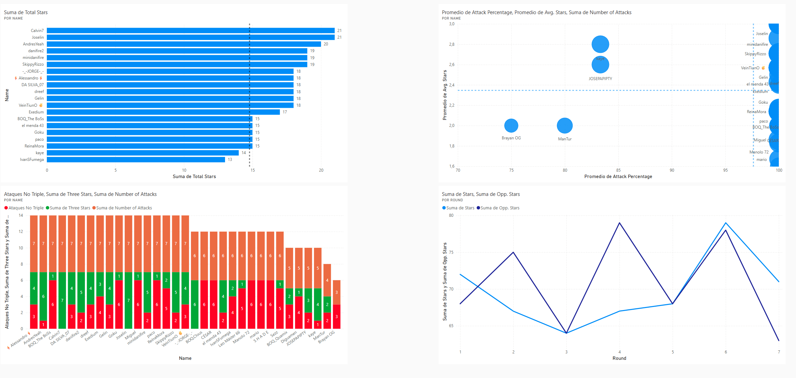
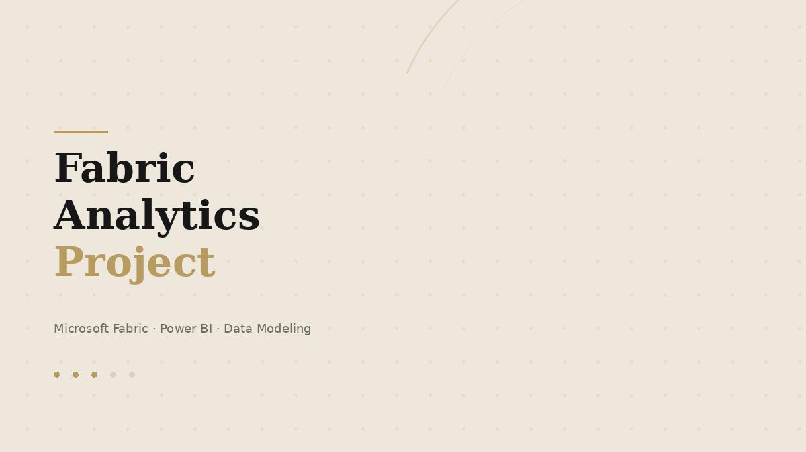

Analytics & Data Visualization
Selected dashboards focused on competitive analytics and end-to-end reporting. Only the strongest pieces remain visible.

Clash of Clans — War Insights
Interactive dashboard analyzing player performance, consistency and strategic trends across clan wars.
Power BIDAXCompetitive analytics

Fabric Analytics Project
End-to-end analytics workflow built with Microsoft Fabric and Power BI, from preparation to interactive reporting.
Microsoft FabricPower BIData Modeling